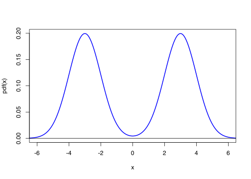
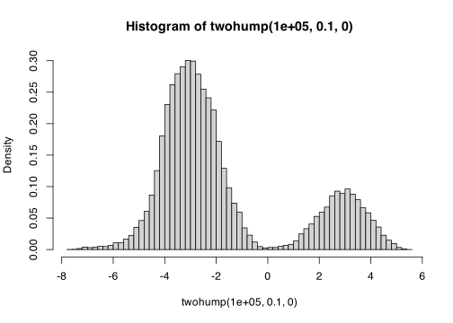
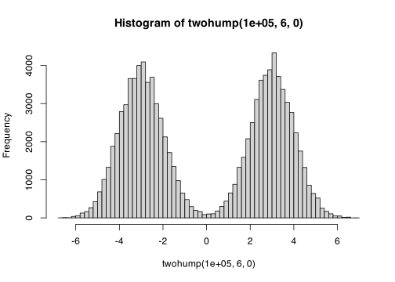
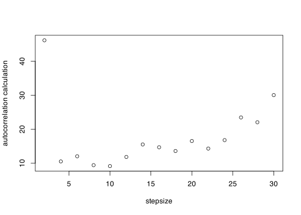

P <- matrix(c(0.97, 0.02, 0.01, 0.3, 0.5, 0.2, 0, 0, 1), 3, 3, byrow = TRUE)Problem Sheet 4
Full solutions are now available.
This is Problem Sheet 4, which covers material from Lectures 17 to 21. You should work through all the questions on this problem sheet in advance of the problems class, which takes place in the lecture of Friday 29 November (one day later than the usual Thursday). If you are stuck on any of the questions, you are welcome to discuss them with me in my office hours on Mondays at 1500.
This problem sheet is to help you practice material from the module. It is not for assessment and will not be marked.
Full solutions should be released on Monday 2 December.
\[\newcommand{\Exg}{\operatorname{\mathbb{E}}} \newcommand{\Ex}{\mathbb{E}} \newcommand{\Ind}{\mathbb{I}} \newcommand{\Var}{\operatorname{Var}} \newcommand{\Cov}{\operatorname{Cov}} \newcommand{\Corr}{\operatorname{Corr}} \newcommand{\ee}{\mathrm{e}}\]
1. Consider a Markov chain on the discrete state space \(\mathcal S = \{1, 2, \dots\}\) with transition probabilities \(p(x, x+1) = p\) for all \(x\), \(p(x, 1) = 1 - p\) for all \(x\), and \(p(x, y) = 0\) otherwise.
(a) Calculate the two-step transition probabilities \(p^{(2)}(x, y)\). (You might start by working out what two-step transitions are even possible.)
Solution. The possible paths of length two from \(x\) are
\(x \to x + 1 \to x + 2\): this requires two steps up, so has probability \(p^2\).
\(x \to x+1 \to 1\): this requires one step up then a reset, so has probability \(p(1-p)\).
\(x \to 1 \to 2\): this requires a reset then one step up, so has probability \((1-p)p\).
\(x \to 1 \to 1\): this requires two resets, so has probability \((1-p)^2\).
Hence the two-step transition probabilities are \[ \begin{align} p^{(2)}(x, x+2) &= p^2 \\ p^{(2)}(x, 2) &= (1-p)p \\ p^{(2)}(x, 1) &= p(1 - p) + (1-p)^2 = 1 - p \end{align} \] and \(p(x, y) = 0\) otherwise.
(b) Find the stationary distribution \(\pi\) for the Markov chain by solving \(\pi(y) = \sum_x \pi(x) p(x,y)\).
Solution. For \(y \neq 1\), the only \(x\) with \(p(x, y) \neq 0\) is \(x = y-1\). So we have \(\pi(y) = \pi(y-1)\,p(y-1, y) = p\,\pi(y-1)\).
Hence we have \(\pi(2) = p\,\pi(1)\), \(\pi(3) = p\,\pi(2) = p^2 \pi(1)\), \(\pi(4) = p\,\pi(3) = p^3 \pi(1)\), and in general \(\pi(i) = p^{i-1}\,\pi(1)\). (This equation even holds for \(i = 1\) itself.)
We also know that \(\pi\) is a distribution, so must sum to 1. Hence \[ 1 = \sum_{i=1}^\infty \pi(i) = \sum_{i=1}^\infty p^{i-1}\,\pi(1) = \pi(1) \sum_{i=1}^\infty p^{i-1} = \pi(1) \, \frac{1}{1-p} . \] Hence \(\pi(1) = 1 - p\), and \(\pi(i) = p^{i-1}(1-p)\). This is a \(\operatorname{Geom}(1-p)\) distribution.
2. The health of a chicken each day during a bird flu pandemic is described by a simple “healthy–sick–dead” Markov chain model. The state space is \(\mathcal S = \{\text{H}, \text{S}, \text{D}\}\). The transition probabilities are \[ \begin{align} p_{\mathrm{HH}} &= ? & p_{\mathrm{HS}} &= 0.02 & p_{\mathrm{HD}} &= 0.01 \\ p_{\mathrm{SH}} &= 0.3 & p_{\mathrm{SS}} &= 0.5 & p_{\mathrm{SD}} &= 0.2 \\ p_{\mathrm{DH}} &= ? & p_{\mathrm{DS}} &= ? & p_{\mathrm{DD}} &= 1. \end{align} .\] Fill in the three gaps (marked \(?\)).
If a chicken is healthy on day 1, what is the probability it is still alive on (a) day 2, (b) day 3; (c) day 11; (d) day 51? (You should do parts (a) and (b) by hand, but I recommend a computer for parts (c) and (d).)
Solutions. Because row of a transition matrix have to add up to 1, \(p_{\mathrm{HH}} = 1 - 0.02 - 0.01 = 0.97\). Because all entries also have to be non-negative, it must be that \(p_{\mathrm{DH}} = p_{\mathrm{DS}} = 0\).
(a) One day later, on day 2, the chicken has died with probability \(p_{\mathrm{HD}} = 0.01\), and is still alive with probability \(p_{\mathrm{HH}} + p_{\mathrm{HS}} = 0.97 + 0.02 = 1 - p_{\mathrm{HD}} = 0.99\).
(b) This requires us to calculate \(p^{(2)}_{\mathrm{HH}} + p^{(2)}_{\mathrm{HS}} = 1 - p^{(2)}_{\mathrm{HD}}\).
We can either do this by summing over paths of length 2 (like in Question 1(a)) or by doing the matrix multiplication. Let’s do it the matrix multiplication way this time. We have \[ \mathsf P^{(2)} = \mathsf P^2 = \begin{pmatrix} 0.97 & 0.02 & 0.01 \\ 0.3 & 0.5 & 0.2 \\ 0 & 0 & 1 \end{pmatrix} \begin{pmatrix} 0.97 & 0.02 & 0.01 \\ 0.3 & 0.5 & 0.2 \\ 0 & 0 & 1 \end{pmatrix} = \begin{pmatrix} 0.9469 & 0.0294 & 0.0237 \\ 0.441 & 0.256 & 0.303 \\ 0 & 0 & 1\end{pmatrix}.\]
So the answer is \(0.9469 + 0.0294 = 1 - 0.0237 = 0.9763\).
(c) and (d) I read the transition matrix into R as follows.
I then used the matrix power function from Lecture 18.
matrixpow <- function(M, n) {
if (n == 1) return(M)
else return(M %*% matrixpow(M, n - 1))
}The answers are the following.
P11 <- matrixpow(P, 11)
P11[1, 1] + P11[1, 2][1] 0.8354785P50 <- matrixpow(P, 50)
P50[1, 1] + P50[1, 2][1] 0.41861963. Consider sampling from Poisson distribution with rate \(\lambda\) using the random walk Metropolis algorithm on the integers.
(a) Calculate the acceptance probabilities for this Markov chain. What proposals are always accepted with probability 1?
Solution. The Poisson distribution has PMF \[ \pi(x) = \mathrm{e}^{-\lambda} \,\frac{\lambda^x}{x!} . \]
The acceptance probability for “up one” is \[ \alpha(x, x+1) = \min \left\{ \frac{\pi(x+1)}{\pi(x)} , \, 1 \right\} = \min \left\{ \frac{\mathrm{e}^{-\lambda} \,\frac{\lambda^{x+1}}{(x+1)!}}{\mathrm{e}^{-\lambda} \,\frac{\lambda^x}{x!}} , \, 1 \right\} = \min \left\{ \frac{\lambda}{x+1}, \, 1 \right\} . \] This is 1 if the step up remains less than or equal to \(\lambda\).
The acceptance probability for “down one” is \[ \alpha(x, x-1) = \min \left\{ \frac{\pi(x-1)}{\pi(x)} , \, 1 \right\} = \min \left\{ \frac{\mathrm{e}^{-\lambda} \,\frac{\lambda^{x-1}}{(x-1)!}}{\mathrm{e}^{-\lambda} \,\frac{\lambda^x}{x!}} , \, 1 \right\} = \min \left\{ \frac{x}{\lambda}, \, 1 \right\} . \] This is 1 if the step down is from greater than or equal to \(\lambda\).
(b) Suggest a good initial starting point \(X_1\) for your Markov chain. Why did you choose this?
Solution. Somewhere in the middle of the distribution would be good. I would suggest the nearest integer to \(\lambda\) as a pretty good place to start, but that’s not the only sensible choice.
(c) Write some R code to run this Markov chain in the case \(\lambda = 4.5\).
This is my code
lambda <- 4.5
acceptup <- function(x, lambda) lambda / (x + 1)
acceptdown <- function(x, lambda) x / lambda
initial <- round(lambda)
n <- 1e6
MRW <- rep(0, n)
MRW[1] <- initial
for (i in 1:(n - 1)) {
if (runif(1) < 0.5) {
# up proposal
if (runif(1) < acceptup(MRW[i], lambda)) MRW[i + 1] <- MRW[i] + 1
else MRW[i + 1] <- MRW[i]
} else {
# down proposal
if (runif(1) < acceptdown(MRW[i], lambda)) MRW[i + 1] <- MRW[i] - 1
else MRW[i + 1] <- MRW[i]
}
}Let’s check if this has worked by looking at the probabilities.
observed <- table(MRW)[1:11] / n
expected <- dpois(0:10, lambda)
round(rbind(observed, expected), 4) 0 1 2 3 4 5 6 7 8 9
observed 0.0107 0.0498 0.1116 0.1681 0.1897 0.1721 0.1294 0.0827 0.0459 0.0229
expected 0.0111 0.0500 0.1125 0.1687 0.1898 0.1708 0.1281 0.0824 0.0463 0.0232
10
observed 0.0104
expected 0.0104This looks like an excellent match.
(d) Using your Markov chain, obtain an MCMC estimate of \(\operatorname{\mathbb E}X(X-1)\), where \(X \sim \operatorname{Po}(4.5)\).
Solution.
mean(MRW * (MRW - 1))[1] 20.28211(e) (Optional) Calculate the correct answer, and comment on the accuracy of your estimate.
Solution. We have \[ \mathbb EX(X-1) = \sum_{x=0}^\infty x(x-1)\,\mathrm{e}^{\lambda}\,\frac{\lambda^x}{x!} = \lambda^2\, \mathrm{e}^{-\lambda} \sum_{x=2}^\infty \frac{\lambda^{x-2}}{(x-2)!} = \lambda^2 \,\mathrm{e}^{-\lambda}\,\mathrm{e}^{\lambda} = \lambda^2 . \] So the correct answer here is \(\lambda^2 = 4.5^2 = 20.25\).
I found my Markov chain always gets it right to the nearest integer and often gets it right to 1 decimal place (either 20.2 or 20.3). It is not quite as accurate basic Monte Carlo would be (which almost always gets 1 decimal place with a million samples, and occasionally two decimal places), but it is pretty good.
4. For \(-1 < \alpha < 1\), consider the Markov chain on \(\mathcal S = \mathbb R\) given by \(X_{i+1} = \alpha X_i + Z_i\), where the \(Z_i \sim \operatorname{N}(0, 1)\) are IID standard normals. (Students who have studied time series will recognise this as an AR(1) autoregressive process.)
(a) Write down the transition density \(p(x, y)\) for this Markov chain.
Solution. Given \(X_i = x\), we have that \(X_{i+1} = \alpha x + \operatorname{N}(0, 1) = \operatorname{N}(\alpha x, 1)\). So the transition density is \[ p(x, y) = \frac{1}{\sqrt{2\pi}}\,\mathrm{e}^{-(y - \alpha x)^2/2} . \]
(b) Find a stationary distribution for this Markov chain.
Solution. There are some long-winded ways to do this. But I would start by guessing there’s a pretty good chance the stationary distribution will be normally distributed. So let’s guess there’s a stationary distribution \(\operatorname{N}(\mu, \sigma^2)\), and see if we can find \(\mu\) and \(\sigma^2\) that satisfy this. (If we can’t, then our guess was wrong, and we’ll have to go back to the drawing board.)
If \(X \sim \operatorname{N}(\mu, \sigma^2)\), then \(\alpha X \sim \operatorname{N}(\alpha\mu, \alpha^2\sigma^2)\) and \(\alpha X + Z \sim \operatorname{N}(\alpha\mu, \alpha^2\sigma^2 + 1)\). To have \(X\) with the same distribution as \(\alpha X + Z\), we need \(\operatorname{N}(\mu, \sigma^2) = \operatorname{N}(\alpha\mu, \alpha^2\sigma^2 + 1)\).
This will hold true if the parameters are the same on bother sides. Looking at the mean parameters, we need \(\mu = \alpha\mu\), which forces \(\mu = 0\). Looking at the variance parameters, we need \(\sigma^2 = \alpha^2 \sigma^2 + 1\), so \(\sigma^2 = 1/(1 - \alpha^2)\). These satisfy the equation. So a stationary distribution is \[ \operatorname{N}\bigg(0, \,\frac{1}{1 - \alpha^2}\bigg) . \]
5. Let \(Y \sim \operatorname{N}(-3, 1)\) and \(Z \sim \operatorname{N}(3,1)\). Let \(X\) be a mixture distribution that equals \(Y\) with probability \(\frac12\) and equals \(Z\) with probability \(\frac12\); in other words, if \(f\) is the PDF of \(Y\) and \(g\) is the PDF of \(Z\), then \(\pi(x) = \frac12 f(x) + \frac12 g(x)\) is the PDF of \(X\).
(a) Draw a graph of \(\pi\).
Solution.
pdf <- function(x) 0.5 * dnorm(x, -3, 1) + 0.5 * dnorm(x, 3, 1)
curve(pdf, from = -7, to = 7, xlim = c(-6, 6), n = 1001, col = "blue", lwd = 2)
abline(h = 0)
(b) Your intention is to sample (approximately) from \(X\) using the random walk Metropolis algorithm on the state space \(\mathcal S = \mathbb R\). Explain why this could be tricky, and why a good choice of the typical stepsize \(\sigma\) will be particularly important.
Solution. We have a “bimodal” distribution, with two humps. If we’re not carefully, our random walk might get stuck for a long time in just one of the humps, without exploring the other one, which give an output that is not representative of the full distribution. In particular, if the typical step size \(\sigma\) is too small, getting from one hump to the other will require a long and unlikely trek through the “low probability zone” between the two humps.
Hence it will be vitally important to make sure that \(\sigma\) is big enough that jumps between the two humps can happen reasonably often. (Although, as ever, having the typical step size \(\sigma\) too big brings it’s own problems of rejecting moves that overshoot the other hump.)
(c) Write an R program that will run the random walk Metropolis algorithm with target distribution \(\pi\). Experiment with different values of the typical step size \(\sigma\). What did you discover, and what value of \(\sigma\) did you find most appropriate?
Solution.
twohump <- function(n, stepsize, initial) {
MC <- rep(0, n)
MC[1] <- initial
for (i in 1:(n - 1)) {
prop <- MC[i] + rnorm(1, 0, stepsize)
if (runif(1) < pdf(prop) / pdf(MC[i])) MC[i + 1] <- prop
else MC[i + 1] <- MC[i]
}
return(MC)
}I’ll start with stepsize 0.5.
set.seed(6)
hist(twohump(1e5, 0.1, 0), breaks = 50, probability = TRUE)
This has gone very badly – I’ve spent much more time in the left hump than the right hump. I found in general that sometimes I got lucky and got balanced humps in the histogram, but on other occasions it was even more unbalanced than the one shown above.
Perhaps better would be to set \(\sigma = 6\), since that is the gap between the two peaks.
hist(twohump(1e5, 6, 0), breaks = 50)
That looks better – the humps are pretty balanced now (although not perfectly balanced each time).
To be more rigorous, we could look at the autocorrelation, specifically \(1 + 2 \sum_{k=0}^{\infty} \rho(k)\), which we saw was an important figure in Lecture 22.
trials <- c(0.1, 0.5, 1, 2, 5, 10, 20, 50, 100, 200, 500, 1000)
results <- rep(0,12)
for (i in 1:12) {
MC <- twohump(1e5, trials[i], 0)
results[i] <- 1 + 2 * sum(acf(MC, lag.max = 1000, plot = FALSE)$acf)
}
plot(trials, results, xlab = "stepsize", ylab = "autocorrelation calculation", log = "x")
This suggests that stepsizes around about the size of 10 is the right order of magnitude. Let’s look a bit closer.
trials <- 2*(1:15)
results <- rep(0,15)
for (i in 1:15) {
MC <- twohump(1e5, trials[i], 0)
results[i] <- 1 + 2 * sum(acf(MC, lag.max = 1000, plot = FALSE)$acf)
}
plot(trials, results, xlab = "stepsize", ylab = "autocorrelation calculation")
This is a rather noisy picture – I’d have to do more and longer experiments to find out more. But I’d suggest something in the 4 to 10 range is probably best.
(d) Estimate \(\mathbb EX\) using your program. Comment on the accuracy of your estimation.
The estimate is simply
mean(twohump(1e6, 6, 0))[1] -0.002129821The answer should be 0. I find this is usually pretty accurate – I usually get 0.0 to one decimal place, and often 0.00 to two decimal places.
6. Consider the Metropolis–Hastings algorithm on the state space \(\mathbb R\) with target density \[ \pi(x) \propto \sin^2(x) \,\exp(-|x|) . \] Each of the following proposal methods gives a formula for the proposed next state \(Y_{i+1}\) given the current state \(X_{i}\). For each proposal method, write down the proposal density \(r(x,y)\) and calculate the acceptance probability \(\alpha(x, y)\).
(a) \(Y_{i+1} = X_i + Z_i\), where \(Z_i \sim \operatorname{N}(0,1)\) are IID.
Solution \({\displaystyle r(x, y) = \frac{1}{\sqrt{2\pi}}\,\mathrm{e}^{-(y-x)^2/2}}\).
Because this is symmetric, the acceptance probability is \[ \begin{align} \alpha(x, y) = \min \left\{ \frac{\pi(y)}{\pi(x)},\,1 \right\} &= \min \left\{ \frac{\sin^2(y) \,\exp(-|y|)}{\sin^2(x) \,\exp(-|x|)},\,1 \right\} \\ &= \min \left\{ \frac{\sin^2(y)}{\sin^2(x)} \,\exp(|x|-|y|),\,1 \right\} . \end{align} \]
(b) \(Y_{i+1} = X_i + Z_i\), where \(Z_i \sim \operatorname{U}[-1,2]\) are IID.
Solution \(r(x, y) = \frac13\) is \(x-1 \leq y \leq x+2\).
Now the acceptance probability. If \(x - 1 \leq y \leq x + 1\), then \(r(x,y) = r(y,x) = \frac13\). In that case, \[ \alpha(x, y) = \min \left\{ \frac{\sin^2(y)}{\sin^2(x)} \,\exp(|x|-|y|),\,1 \right\} \] again. On the other hand, if \(x + 1 < y \leq x + 2\), then \(r(x, y) = \frac13\) while \(r(y,x) = 0\). In this case, \(\alpha(x, y) = 0\).
(c) \(Y_{i+1} \sim \operatorname{N}(0,1)\), independent of \(X_i\).
Solutions. In this case, \(r(x, y)\) does not depend on \(x\) at all. We have simply \[ r(x, y) = \frac{1}{\sqrt{2\pi}}\,\mathrm{e}^{-y^2/2} . \] \[ \begin{align} \alpha(x, y) &= \min \left\{ \frac{\mathrm{e}^{-y^2/2} \,\pi(y)}{\mathrm{e}^{-x^2/2} \, \pi(x)} \right\} \\ &= \min \left\{ \frac{\mathrm{e}^{-y^2/2}}{\mathrm{e}^{-x^2/2}}\,\frac{\sin^2(y)}{\sin^2(x)} \,\exp(|x|-|y|),\,1 \right\} \\ &= \min \left\{ \frac{\sin^2(y)}{\sin^2(x)} \,\exp\big(x^2/2 + |x|-y^2/2 - |y|\big),\,1 \right\} \end{align} \]